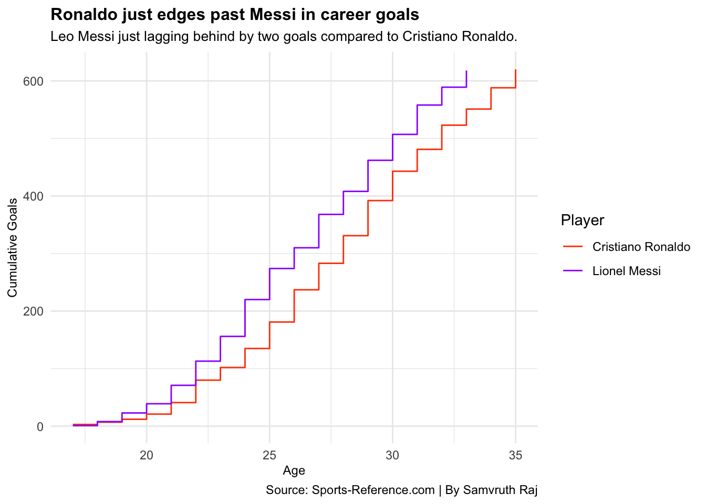
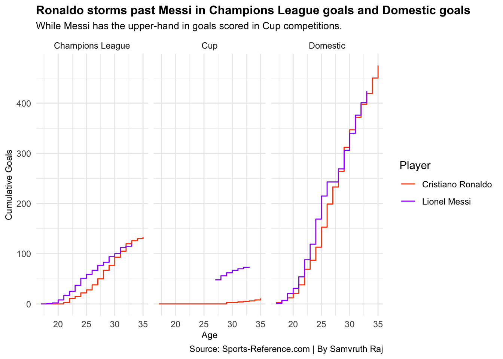
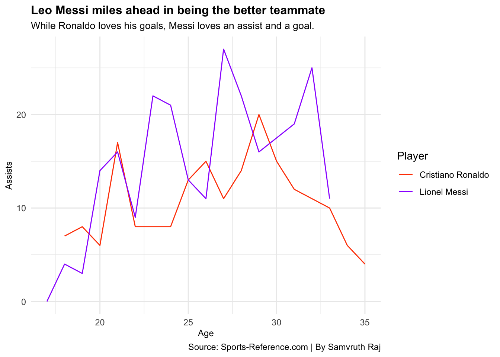
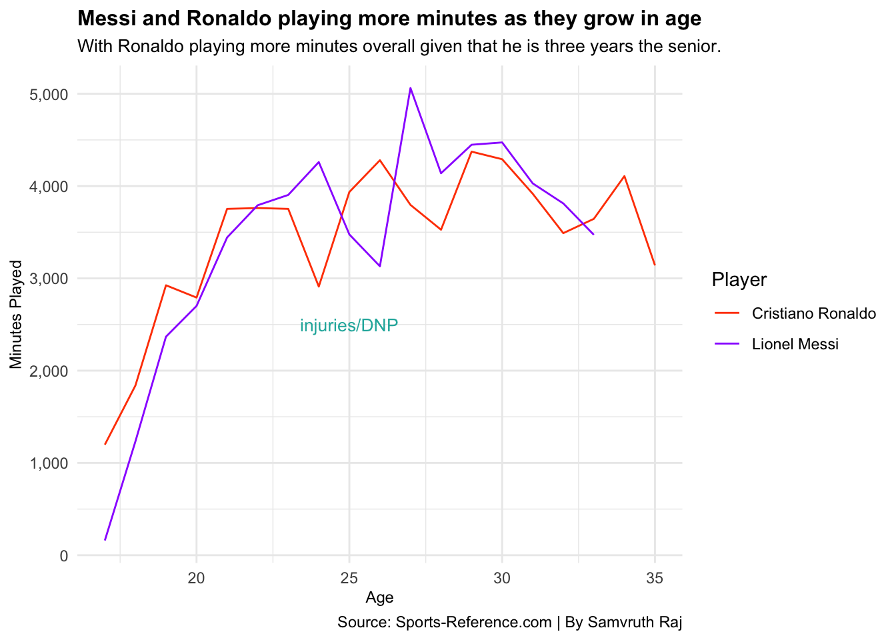
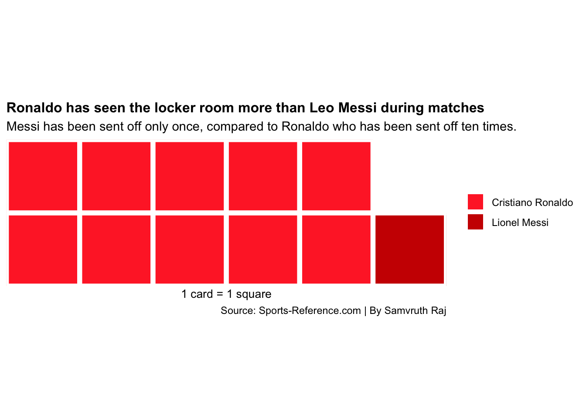
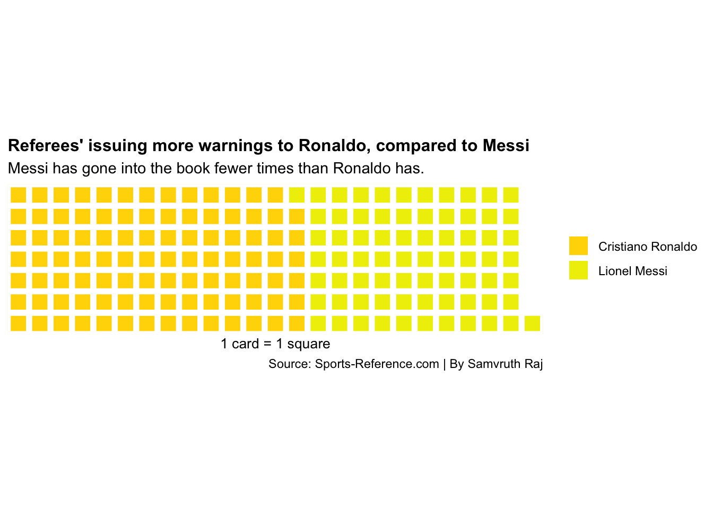

Code
library(tidyverse)
library(scales)
library(ggrepel)
library(waffle)Samvruth Raj
April 19, 2021
Cristiano Ronaldo and Lionel Messi are two players who have competed against each other over the past decade in world football. It is no doubt that greatness is the only word that can define both of these players. Before the start of the 2003/2004 season, Manchester United signed Cristiano Ronaldo, at that time it was reported to have been a British record for the transfer fees for a teenage player. Ronaldo wore the iconic number 7 shirt at Man United, where he became a fan favorite winning numerous trophies at the club, including one Ballon d’Or trophy. He eventually made his move to Real Madrid, on the flip side, a young Argentine boy coming up the ranks in Barcelona, who was none other than Leo Messi. Messi played for Barcelona and Ronaldo played for Madrid during the prime of their careers, this turned it to be a rivalry between both players given the fact that when Barcelona and Real Madrid play against each other, is a rivalry by itself, termed as the “El Classico.”
Ronaldo and Messi have had fantastic individual careers, and like Basketball you always have the “GOAT” conversation which translates to the Greatest of All Time, when it came to Micheal Jordan or Lebron James. In world football, football fans also come up with this question all the time, between Cristiano Ronaldo and Leo Messi. Ronaldo is a right-footed player, who depended on his physical attributes while on the other hand, you have Leo Messi who is a dominant left-footed player, and the game came naturally to him, Ronaldo worked hard and Messi was a naturally gifted player. They are opposite players in terms of style, this could be one of the reasons why they matched up so well. They both are legends of this sport, given that we are in the year 2021, both of them are still doing well, although Ronaldo made his move to Juventus a few seasons ago, Well one thing that can split these two players are stats of their careers over time.
Here’s a look at some data.
I will be using one data set, where I have pulled my data from Sports Reference’s soccer site, this mainly deals with Ronaldo’s and Messi’s statistics in terms of their goals scored across various club competitions, assists made over time, minutes played across the various seasons and the yellow and red cards they have accumulated over time.
The first question that comes to anyone who watches football would be Goals, as a matter of fact, Ronaldo and Messi are attacking players. They have scored some memorable goals throughout their careers, but since we are trying to answer who is the better player, we look through their goals going back to their very first seasons as pro footballers up until their current season. This includes goals from open play and penalty goals scored.
To do this, I mainly look at the age and the player and I sum up the goals of their respective careers. I also find the cumulative goals which will help tell the goals scored at what age for my first visualization.
`summarise()` has grouped output by 'Age'. You can override using the `.groups`
argument.This brings me to my first chart, this Step chart shows you the goals scored as both the players grew in age.
ggplot() +
geom_step(data = goal, aes(x= Age, y=cumulativetotal, group = Player, color = Player)) +
labs(x="Age",
y="Cumulative Goals",
title="Ronaldo just edges past Messi in career goals",
subtitle="Leo Messi just lagging behind by two goals compared to Cristiano Ronaldo.",
caption="Source: Sports-Reference.com | By Samvruth Raj") +
scale_color_manual(values = c("orangered", "purple1")) +
theme_minimal() +
theme(
plot.title = element_text(size = 12, face = "bold"),
axis.title = element_text(size = 9),
plot.subtitle = element_text(size=10)
)
Well, looking at this chart, you can see how close these two players are in terms of goals scored, with Ronaldo having two more goals. The tally for these players in terms of goals scored is Cristiano Ronaldo: 620 goals, Leo Messi: 618 goals. I also have too mention this does not include goals scored at the International level of football, which eliminates goals scored by Ronaldo for his country Portugal and goals scored by Messi for his country Argentina. Ronaldo would be ahead if we counted goals scored for their respective countries, as he is the current active footballer with the most goals for any country. Since I am worried about club football, given the fact that they play more club football than football with their national teams. This chart goes to tell the fans who have always wondered who had more goals, statistically, Ronaldo does, but it is so close!
Well naturally the next question which arises, is the various club competitions. Messi has played for Barcelona (Spain) all his life, and Ronaldo has played for four different clubs which include Sporting CP (Portugal), Manchester United (England), Real Madrid (Spain), and Juventus (Italy). While Messi has just played competitions in Spain, Ronaldo has seen it all in different countries. Let us see how they match up against each other in club competitions.
To do this, I pick out the age, player, and competition type this would help segregate the competitions by type, for example, Domestic competitions would be Premier League, La Liga. Cup competitions for example would be the Copa Del Rey and the FA cup.
`summarise()` has grouped output by 'Age', 'Player'. You can override using the
`.groups` argument.This is a Facet wrap, which includes small step charts for each competition.
ggplot() +
geom_step(data = Comp , aes(x= Age, y=cumulativetotal, group = Player, color = Player)) +
facet_wrap(.~CompType) +
labs(x="Age",
y="Cumulative Goals",
title="Ronaldo storms past Messi in Champions League goals and Domestic goals",
subtitle="While Messi has the upper-hand in goals scored in Cup competitions.",
caption="Source: Sports-Reference.com | By Samvruth Raj") +
scale_color_manual(values = c("orangered", "purple1")) +
theme_minimal() +
theme(
plot.title = element_text(size = 12, face = "bold"),
axis.title = element_text(size = 9),
plot.subtitle = element_text(size=10),
)
This chart shows the goals scored across the competitions, While Ronaldo has a front foot in the Domestic Leagues and the Champions League, Messi is ahead on the Domestic Cup competitions.
Moving on from goals, another important statistic in football are assists. These are passes, crosses, or plays that help you score goals. Without an assist, there are no goals, unless it is a Penalty or Direct free-kick scored.
Fans often say “Ronaldo is a greedy player,” “he wants to score all the goals,” and on the other hand “Messi provides for his team,” “He’s more of a team player,” Well, let’s put that to the test. Ronaldo plays an attacking position, which should result in more goals than assists, and Messi has played different positions, he is played as a right-winger and also played in the midfield, this means he would provide for his team and score, but let us see who has more assists over each other.
To do this, I start picking their ages and the two player’s and add up the assists over time.
`summarise()` has grouped output by 'Age'. You can override using the `.groups`
argument.This brings me to my third chart, a Line chart that shows their ages and assists provided over a period of time.
ggplot() +
geom_line(data = Assists , aes(x= Age, y=total, group = Player, color = Player))+
labs(x="Age",
y="Assists",
title="Leo Messi miles ahead in being the better teammate",
subtitle="While Ronaldo loves his goals, Messi loves an assist and a goal.",
caption="Source: Sports-Reference.com | By Samvruth Raj") +
scale_color_manual(values = c("orangered", "purple1")) +
theme_minimal() +
theme(
plot.title = element_text(size = 12, face = "bold"),
axis.title = element_text(size = 9),
plot.subtitle = element_text(size=10),
)
This should not be a surprise, given the fact Ronaldo is more of a goal scorer. Messi as I have stated above has played different positions and has had more assists throughout his career. The exact number would be Ronaldo: 192 assists, Leo Messi: 251 assists. This chart shows you at what age vs the number of assists provided based on the age of the player. Is it safe to say Ronaldo is greedy? or Messi is a team player. My answer would be yes, but that does not define whose an overall better player.
Moving Further,
Given both of these players’ current ages Ronaldo: 36 years, and Messi: 33 years. I wanted to see how many minutes they have played over each age of their careers. This by no means is to compare which player has more minutes and he is better. This helps understand and compare their overall respective careers for both of these players.
To do this, as usual, I pick up both the players and then their ages and sum up the minutes played.
`summarise()` has grouped output by 'Age'. You can override using the `.groups`
argument.This is a Line chart based on minutes played at what age.
ggplot() +
geom_line(data = MP, aes(x= Age, y=total, group = Player, color = Player))+
geom_text(aes(x=25, y=2500, label= "injuries/DNP"), color = "lightseagreen", size = 3.5) +
scale_y_continuous(labels = comma) +
labs(x="Age",
y="Minutes Played",
title="Messi and Ronaldo playing more minutes as they grow in age",
subtitle="With Ronaldo playing more minutes overall given that he is three years the senior.",
caption="Source: Sports-Reference.com | By Samvruth Raj") +
scale_color_manual(values = c("orangered", "purple1")) +
theme_minimal() +
theme(
plot.title = element_text(size = 12, face = "bold"),
axis.title = element_text(size = 9),
plot.subtitle = element_text(size=10)
)
Given the caliber of both these players, this is a very close chart. There are a few dips that can account for injuries or they just did not play (DNP) as many games early on in their careers. The total number of minutes played by these respective players are Cristiano Ronaldo: 65,437 minutes and Leo Messi: 57,903 minutes played, hopefully, many more to come. This is a mere comparison of the minutes played because you would expect them to play each and every single match. Ronaldo has the upper hand, as he started playing before Messi and his three years older as well.
The final comparison I am going to look at is the accumulation of suspensions, in terms of Yellow and Red Cards from the start of their careers until the present. While this can be one of the most debated topics about the referee giving out a Yellow or Red card, let’s see who has more bookings to their name in the referee’s books. This cannot be justified as the referee never talks about the decisions they make. This is just a comparison so that people have an idea, and again this cannot prove whose the better player. This can make an argument of who the more heated player on the pitch.
To do this, I first pick the players, and sum up the red and yellow cards for each player, their age is not significant in this comparison as we are looking over time and only want the total number of cards.
The next two charts are waffle charts showing the Yellow and Red Cards received by Cristiano Ronaldo and Leo Messi.
waffle(
red,
rows = 2,
xlab = "1 card = 1 square",
color = c("firebrick1", "red3")
) +
labs(
title="Ronaldo has seen the locker room more than Leo Messi during matches",
subtitle="Messi has been sent off only once, compared to Ronaldo who has been sent off ten times.",
caption="Source: Sports-Reference.com | By Samvruth Raj") +
theme(
plot.title = element_text(size = 12, face = "bold"),
axis.title = element_text(size = 9),
)
The first waffle chart shows the number of red cards for both the players, a red card is a card shown by a referee to a player in a match when there is extreme foul play. Ronaldo has 10 red cards to his name in club competitions while Messi just has one red card. A red card can ban you for the next game or the next three games depending on if it was a straight red or two yellow cards which converts into a red card. A straight red card bans you for three games, while two yellow cards in the same game convert into a red card can ban you for one game. This means Ronaldo has left the pitch 10 times, compared to Messi which was just once. A red card is rare and can be given only in extreme conditions, however, Yellow cards are much more frequently given. To make it clear, Ronaldo is represented by the lighter red color, while Messi is represented with the darker red color.
Further on, Yellow cards.
waffle(
yellow,
rows = 7,
xlab = "1 card = 1 square",
color = c("gold", "yellow2")
) +
labs(
title="Referees' issuing more warnings to Ronaldo, compared to Messi",
subtitle="Messi has gone into the book fewer times than Ronaldo has.",
caption="Source: Sports-Reference.com | By Samvruth Raj")+
theme(
plot.title = element_text(size = 12, face = "bold"),
axis.title = element_text(size = 9),
)
This is the second waffle chart, this shows the number of yellow cards for both the players. A yellow card is deemed as a warning after collecting a few fouls, this is the initial warning to a player. Once a player is on a yellow card he/she must be cautious as another yellow card can convert to a red card, this sees you out of the match and you are likely to be banned for the next match. Ronaldo has received 97 yellow cards, while Messi has received 72 yellow cards respectively. To make it clear, Ronaldo is represented by the darker yellow color, while Messi is represented with the lighter yellow color.
From both of the waffle charts, Ronaldo has more red/yellow cards throughout his career compared to Messi. Some might argue he is the more heated player, but the truth is the referee’s also make mistakes and sometimes the cards received by players are not completely justified.
Well looking at my whole analysis, here comes the question, who is the better player? it is very close. They are both great players of our generation and instead of constantly comparing the two players. let’s take a moment to appreciate the greatness. Both the players have won every trophy that is there to win at club football. They have strong personal accolades as well, Leo Messi has won the Ballon d’Or trophy six times and Cristiano Ronaldo has won the Ballon d’Or trophy five times. A Ballon d’Or is a trophy that is presented to the player who performs the best in the previous season. Although Messi has won it a record six times, Ronaldo has won it five times and yet again this is a close statistic. Given the ages of both the players, Ronaldo who is 36, and Messi who is 33. Let’s make the most while they are still playing the sport of football then try and compare them. With the emerging lights of Kylian Mbappe and Erling Haaland, who might take the next center stage in world football, let us appreciate Cristiano Ronaldo and Lionel Messi while we still can, and I am sure every fan would like to see both of them play together on the same team, it is a long shot, but anything can happen in football.